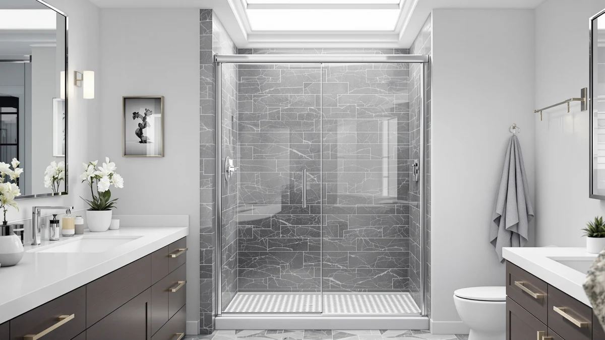

Royal Guard 56–60" Frameless Single Sliding Shower Door Review (2026): Worth It?
Prices and picks verified as of November 2026. Independent, reader-supported reviews.


Quick Answer
The Royal Guard 56–60" Frameless Single Sliding Shower Door is a $419.99 matte black slider built with 5/16 inch tempered glass, a reversible panel, and up to 3/8 inch of flex for an out-of-plumb wall. It's shorter than the three alternatives in this review at a fixed 74 inch height, but it beats the Botwinkle on wall tolerance and matches the EliteEdge on price within a dollar. If your opening runs close to 74 inches tall and your wall isn't perfectly square, it's worth checking first.
Our pick: Royal Guard 56–60" W x74 — $419.99 Check Price on Amazon
Bottom line: our top pick is the Royal Guard 56 at $419.99.
Things to Know Before You Buy
- This is the shortest door of the four at a fixed 74 inches tall. The Botwinkle and the EliteEdge both run 76 inches, and the DELAVIN measures 75 inches, so a taller opening needs one of those three instead.
- At $419.99, it sits in the middle of the price range. The EliteEdge lists at $418.99, almost identical, while the Botwinkle undercuts it at $361.24 and the DELAVIN tops the group at $427.49.
- It's the only door here with a stated wall tolerance. The spec sheet lists up to 3/8 inch (10mm) of flex for an out-of-plumb wall, a figure none of the three alternatives in this frameless shower door comparison mention.
- The matte black finish matches only one of the three alternatives. The Botwinkle shares the same matte black finish, while the DELAVIN comes in gold and the EliteEdge in brushed nickel.
- Glass thickness splits the lineup in half. The Royal Guard and the Botwinkle both use 5/16 inch (8mm) tempered glass, while the DELAVIN and the EliteEdge use thinner 1/4 inch (6mm) glass.
This Royal Guard 56–60" Frameless Single Sliding Shower Door review compares the $419.99 matte black slider against three alternatives in the same width range, the Botwinkle at $361.24, the DELAVIN at $427.49, and the EliteEdge at $418.99. The Royal Guard differs from the other three on two details: 5/16 inch ANSI-certified tempered glass and up to 3/8 inch of tolerance for a wall that isn't perfectly plumb, a spec none of the three competitors list.
We wrote this review because shoppers comparing 56 to 60 inch frameless doors often focus on price alone and miss the differences in glass thickness, finish, and installed height that separate these four listings. The Royal Guard's fixed 74 inch height is the shortest of the group, while the Botwinkle and the EliteEdge both run 76 inches and the DELAVIN sits at 75 inches. That gap matters more than the price difference for anyone with a taller shower opening.
Why You Should Trust Us
Ilane Tall covers bath fixtures for Best Shower Doors and has researched frameless, sliding, and pivot shower doors across dozens of listings. For this Royal Guard 56–60" frameless single sliding shower door review, she compared the listed glass thickness, hardware, wall tolerance, and price against three sliding alternatives built for the same width range. We do not accept free products in exchange for coverage, and every price, dimension, and material spec cited here comes directly from the current product listing.
Our editorial process treats a lower price as one factor among several, not an automatic win. A $361.24 price tag earns credit in a review like this one, but it still has to be weighed against thinner glass or a different finish. That approach shapes every comparison in this piece.
Our Research Process
This Royal Guard 56–60" frameless single sliding shower door review is based on research, not physical use. We compared the Royal Guard against the Botwinkle, the DELAVIN, and the EliteEdge using the specifications, current pricing, and listing details available for each product. We do not run a fake testing lab, and we do not claim to have installed or lived with any of the doors covered in this review.
We looked closely at how the Royal Guard's 5/16 inch tempered glass and 3/8 inch wall tolerance compare to the thinner 1/4 inch glass on the DELAVIN and the EliteEdge, since glass thickness and installation tolerance change how forgiving a door is in an older bathroom with an uneven wall. Shoppers comparing this width range often assume every listing covers the same ground, and this review weighs those construction details alongside price instead of price alone.
We also cross-checked pricing and dimensions against the current listings for all four doors to confirm nothing had shifted since publication. Where a data point wasn't available, such as a stated wall tolerance for the Botwinkle, the DELAVIN, or the EliteEdge, we noted that gap rather than estimate a number the listing doesn't provide.
Overview & Specs

Royal Guard 56–60" W x74
What we like
- The 5/16 inch (8mm) ANSI-certified tempered glass is thicker than the 1/4 inch glass on the DELAVIN and the EliteEdge
- Up to 3/8 inch (10mm) of flex for an out-of-plumb wall, a tolerance none of the three alternatives state
- The reversible panel installs on either the left or right side, and the walk-in width adjusts from 21 15/16 to 25 7/8 inches
Flaws but not dealbreakers
- At 74 inches tall, it's the shortest door in this comparison; the Botwinkle and the EliteEdge both run 76 inches
- The matte black finish won't suit a bathroom built around the gold or brushed nickel hardware on the DELAVIN and the EliteEdge
- The listing doesn't state a star rating or review count, so you're weighing specs rather than a documented ownership record
| Material | — |
| Size | 56-60"W x74"H |
The Royal Guard 56–60" W x74 H is a frameless slider built with thicker 5/16 inch glass and more wall tolerance than any of the three sliding alternatives covered below, in the same 56 to 60 inch width range. Royal Guard pairs that glass with an aluminum frame and 304 stainless steel hardware, and the listing states a nano waterproof coating plus magnetic seal strips at the bottom and sides, details aimed at keeping water inside the enclosure rather than moving the panel along its track alone.
That construction costs $419.99, within a dollar of the EliteEdge's $418.99 and $58.75 more than the Botwinkle's $361.24. The question this review sets out to answer is whether the thicker glass and added wall tolerance justify picking the Royal Guard over a cheaper slider in the same width range.
What We Liked
The clearest strength of the Royal Guard 56–60" frameless single sliding shower door is glass thickness. At 5/16 inch (8mm), it matches only the Botwinkle among the three alternatives in this review, and it beats the 1/4 inch (6mm) glass on both the DELAVIN and the EliteEdge.
The stated 3/8 inch (10mm) tolerance for an out-of-plumb wall is the other standout spec. None of the three alternatives list a wall tolerance at all, so if your shower opening isn't perfectly square, the Royal Guard is the only door in this comparison that addresses that directly in its spec sheet.
We also liked that the panel is reversible, since it can open on either the left or right side depending on your layout. Combined with a walk-in width that adjusts from 21 15/16 to 25 7/8 inches, that flexibility makes the Royal Guard easier to fit into a range of bathroom layouts without a custom order.
What Could Be Better
Height is the clearest drawback in this Royal Guard 56–60" frameless single sliding shower door review. At a fixed 74 inches, it's shorter than the Botwinkle and the EliteEdge, both listed at 76 inches, and shorter than the DELAVIN's 75 inches. If your opening runs taller, the Royal Guard won't cover it the way the other three doors do.
The matte black finish also limits your options if your bathroom hardware leans toward gold or brushed nickel, the finishes on the DELAVIN and the EliteEdge respectively. And like all four doors in this comparison, the listing doesn't provide a star rating or review count, so you're comparing specs and price rather than a documented ownership track record.
Who Is It For?
The Royal Guard 56–60" W x74 H makes the most sense if your shower opening measures between 56 and 60 inches wide and close to 74 inches tall, and your wall isn't perfectly plumb. The 3/8 inch of tolerance and the thicker 5/16 inch glass make it the most forgiving option in this review for an older or slightly uneven bathroom.
If your opening runs taller than 74 inches, or if a gold or brushed nickel finish fits your bathroom better than matte black, the Botwinkle, the DELAVIN, or the EliteEdge below cover that ground instead. Price-sensitive shoppers should also weigh the Botwinkle, which costs $58.75 less and still matches the Royal Guard's glass thickness.
Alternatives to Consider
The Royal Guard 56–60" W x74 H isn't the only option worth considering in this review, and the three sliding doors below span the same general width range at different heights, finishes, and price points. Each one trades at least one of the Royal Guard's standout specs, thicker glass or wall tolerance, for a lower price, a different finish, or a taller fit.

Premium Choice
DELAVIN Frameless Shower Door 56-60"
At $427.49, the DELAVIN costs $7.50 more than the Royal Guard and trades the thicker glass for a 75 inch height and a gold finish, worth a look if you want a taller door or a finish other than matte black.
$427.49
Check Price on Amazon
Best Value
Botwinkle Shower Door 56-60" W
The Botwinkle undercuts the Royal Guard by $58.75 at $361.24 while matching its 5/16 inch glass thickness and matte black finish, though it stands 76 inches tall and doesn't state a wall tolerance.
$361.24
Check Price on Amazon
Also Great
Shower Doors Frameless Shower Door
The EliteEdge lists at $418.99, within a dollar of the Royal Guard, but uses thinner 1/4 inch glass and a brushed nickel finish on a taller 76 inch panel, a straightforward swap if finish matters more to you than glass thickness.
$418.99
Check Price on AmazonFrequently Asked Questions
What size opening does the Royal Guard 56–60" Frameless Single Sliding Shower Door need?
It's built with an adjustable 56 to 60 inch width and a walk-in width between 21 15/16 and 25 7/8 inches, plus a fixed 74 inch height, so measure your opening at multiple points, including for wall plumb, before you order.
How does the Royal Guard 56–60" frameless single sliding shower door compare on price to the alternatives in this review?
At $419.99, it costs $58.75 more than the Botwinkle ($361.24), $1.00 less than the EliteEdge ($418.99), and $7.50 less than the DELAVIN ($427.49), putting it in the middle of the four prices covered in this review.
Is the Royal Guard worth choosing over the Botwinkle, given the price difference?
Only if the 3/8 inch wall tolerance and the shorter 74 inch height work better for your bathroom. The Botwinkle matches the Royal Guard's 5/16 inch glass thickness and matte black finish for $58.75 less, but stands 76 inches tall and doesn't list a wall tolerance, so weigh those specs against the price difference before you decide.
Final Verdict
This Royal Guard 56–60" frameless single sliding shower door review comes down to one trade-off: thicker glass and more wall tolerance at $419.99 against three alternatives that each give up one of those specs for a lower price, a taller height, or a different finish. If your opening measures close to 74 inches tall and your wall isn't perfectly plumb, the Royal Guard 56–60" Frameless Single Sliding Shower Door earns its spot over the Botwinkle, the DELAVIN, and the EliteEdge. If height or finish matters more to you, the Botwinkle covers the same width range for $58.75 less, the DELAVIN adds an inch of height in gold, and the EliteEdge matches the price in brushed nickel. Either way, confirm your opening's exact height and wall condition before you buy, since that's what separates the Royal Guard from every alternative in this comparison.